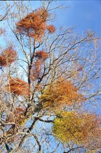
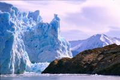
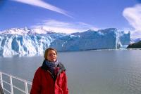
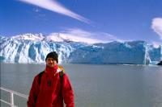
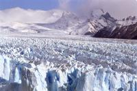
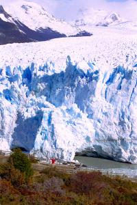

|
Dimanche 2 septembre
On quitte déjà le Chili. Un mois, c'est vite passé. On n'a même pas été dans
les déserts du nord! Passage de la frontière, le poste de douane est planté
au milieu des espaces infinis. Lionel se réjouit déjà. "Les gens racontent n'importe
quoi, ce n'est pas cher l'Argentine, ça fait déjà 10 minutes qu'on y est et
on n'a toujours rien dépensé. Si je calcule notre moyenne quotidienne, ça fait
zéro Francs."
Rio Gallegos, on attend le bus pour El Calafate. Là Lionel déchante vite. 21
pesos (=21dollars) chacun pour les 320 km. On a quitté le Chili! A 20h00, le
bus démarre. C'est drôle, c'est la nuit et pourtant il reste beaucoup de clarté.
C'est dû à la neige mais pas seulement, on voit le ciel assez clair à l'horizon.
On arrive à 1h00 du matin, c'est rude! Une nouveauté nous attend: chauffage
dans notre chambre. On ne va pas se cailler!
Lundi 3 septembre
Sandwiches au jambon, fromage, escalope et mayonnaise au petit déj' et en route
pour le Perito Moreno! On traverse d'abord la plus petite estancia de la région,
Santa Lucia je crois. Elle fait tout de même 3500 hectares. Mais c'est vrai
que comparée à la plus grande, c'est riquiqui, il faut dire que les 300000 hectares
et 40000 têtes de moutons de l'estancia El Condor, ça en impose... Et à qui
c'est cette grosse estancia située plus au sud de Rio Gallegos? A Luciano Benetton!
Il faut dire que la région de Santa Cruz est de la taille du Portugal plus la
moitié de l'Espagne avec seulement 177000 habitants, mais mêêêê... 4 millions
de moutons! Le problème, c'est la chute du cours international de la laine.
A part ça ils exportent plein de lièvres vers l'Europe. Ce sont des lièvres
grands comme des chiens taille cockers. Aujourd'hui, on a eu du bol, on bénéficie
d'une super journée ensoleillée avec une vue dégagée de la Cordillère. Il parait
qu'il y a 10 belles journées comme ça par an! Ici, il fait maxi 25 degrés l'été
et 5 degrés l'hiver. Et moins 15 minimum. Cet hiver, ils ont eu un froid polaire
terrible qui les a privés de gaz, eau, électricité. Tout avait gelé.
Les paysages sont surprenants, désolés, immenses, arbres tourmentés, puissants
mais râblés, végétation basse et écrasée, il a dû y avoir de la neige. Ca me
fait un peu penser à l'atmosphère des villes de chercheurs d'or dans "Croc Blanc"...
On longe le Lago Argentino, le troisième plus grand d'Amérique du Sud (le plus
grand étant le Titicaca) et le premier d'Argentine par sa superficie (1550 km2).
Il a une belle et surprenante couleur bleue laiteuse dûe aux sédiments apportés
par les glaciers qui l'alimentent. On y aperçoit des flamands roses au loin.
PLusproches, de superbes faucons charognards et des oies sauvages toujours en
couple. La femelle est brun-rouge, le mâle blanc et noir magnifique. Si l'un
des deux meurt, l'autre meurt de chagrin, du moins c'est ce que nous a raconté
notre guide un peu chauve et sympathique. On revoit aussi les beaux oiseaux
vus à Valdivia, avec un long bec recourbé, gris et jaunes et qui cancannent.
Ce sont des ibis! Et puis, on ne les voit pas, mais il y a aussi des saumons
et des truites dans le lac. Des alevins ont été apportés d'Europe il y a longtemps
et voilà qu'on trouve maintenant des truites géantes! Une grosse truite en europe
est considérée comme normale ici, le record est de 14 kg pour 1m20!!!
L'ensemble du parc national, ses lacs et glaciers, ses 600000 hectares, forment
la plus grande réserve d'eau douce du monde. Il est d'ailleurs classé monument
du patrimoine mondial. Ici, il y a une devise qui tient en trois phrases: ne
prenez rien sauf des photos, ne laissez rien sauf l'empreinte de vos pas, ne
tuez rien sauf le temps. Il faut dire qu'ici, ils sont sensibilisés à l'écologie.
La région est celle d'Argentine la plus touchée par le cancer de la peau. Ils
ont même commencé depuis peu à trouver des animaux atteits de cette maladie.
Ici la couche d'ozone est fine, très très fine.
On roule à travers le parc, ses arbres brûlés par le gel et le vent quand soudain
le silence se fait dans le minibus. On est tous bouche-bée. Le voilà, le glacier
Perito Moreno. Il semble à portée de main mais il est à 8km. Enorme, il est
énorme! 4km de large, 35 de long. 40 à 80 mètres de hauteur selon les endroits,
100 à 120 de profondeur, il repose sur le fond du lac. Il couvre 257 km2!!!
257 km2 de glace sans pastis, quel gâchis.
On est maintenant dans un bateau au pied du glacier. Il semble de plus en plus
grand. Il est magnifique, crevasses, grottes, fissures partout. On dirait une
succession de pics et de creux très très hauts et profonds. Et tout ça dans
de très beaux tons de bleu et blanc, blanc-bleuté. Un craquement énorme qui
résonne dans le glacier et sur la coline qui l'arrête et on voit un pan entier
de glace se détacher du mur et s'écrouler lentement dans l'eau 30 mètres plus
bas. Une énorme gerbe d'eau jaiilit, reste suspendue, retombe. L'onde se propage
rapidement et forme des vagues qui nous secouent. Enfin l'iceberg tout neuf
fait surface, du moins pour le cinquième de sa surface. Un petit bout de l'aire
quaternaire vient de s'effondrer sous nos yeux.
Puis nous allons observer la bête d'en haut. Piquenique face au glacier. Les
péíements des oiseaux, le souffle du vent dans les sapins et ses sifflements
lorsqu'il s'engouffre dans les méandres du glacier sont troublés par des coups
de fusil et d'énormes coups de tonnerre. Les premiers, ce sont de petits bouts
de glace qui se détachent et tombent dans l'eau. Ca résonne tellement qu'on
dirait un coup de fusil. Les seconds, c'est quand un pan du mur de glace s'effondre.
On a eu la chance d'en voir envore 3 tomber. Et sans cesse, les craquements
du glacier qui avance. C'est la particularité du Perito Moreno, c'est le seul
glacier qui avance encore. Les autres régressent. Enfin, il s'est peut-être
arrêté maintenant. En tout cas, il ne régresse pas. Il y a peu, il avançait
de 2 mètres par jour au milieu et de 40cm sur les côtés. Ce qu'on a vu, c'était
tellement chouette et surprenant que ce n'est pas facile de le faire partager...
Ce soir, on mange des pâtes. Hé oui, c'est Lionel qui cuisine alors il a le
droit de faire le menu. "Et avec ça ma ptite dame?" Une entrecôte de boeuf,
on est au pays du meilleur steack du monde oui ou non?
Suite du voyage : Les baleines
|

Argentine
Perito Moreno
|

Argentine
Perito Moreno
|

Argentine
Perito Moreno
|

Argentine
Perito Moreno
|

Argentine
Perito Moreno
|

Argentine
Perito Moreno
|
|
|